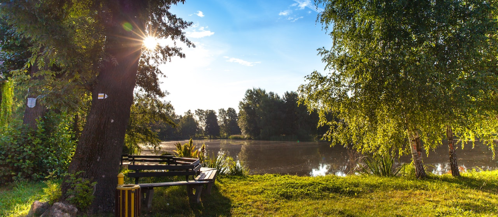

Think Before you Consume.
Through the SUSTAIN campaign, we aim to shed light and show people that modern lifestyle are dangerous to the environment. We also want to raise awareness and help enact meaningful programs to help defend against biodiversity loss from humans. By trying to recooperate lost biodiversity, we will be able to survive on this planet much longer, and perhaps be able to reconnect with the natural world. This will be done by raising awareness of how to live a sustainable lifestyle while not asking people to give up most of their lifestlye choices.


Our #1 goal of this campaign is to promote, and hopefully develop sustainable lifestyles. This can be done through a plethora of ways, many of which are in the aforementioned goals.